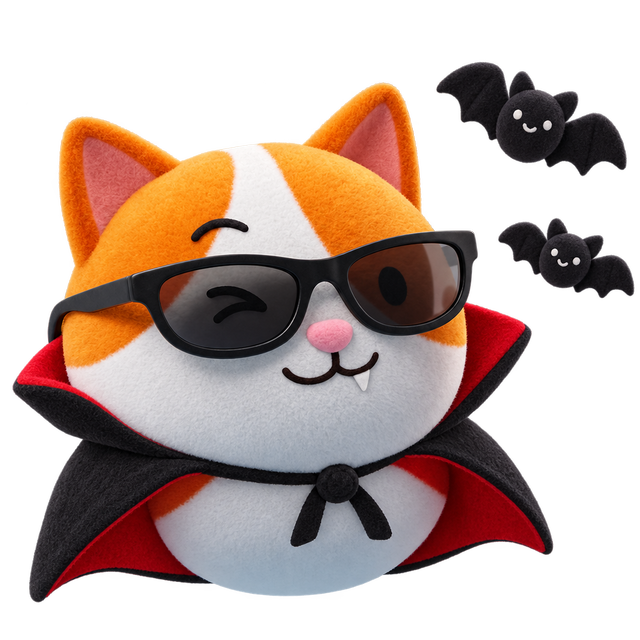

👻 Хэллоуин-тест · 2 минуты
А кто ты из мира Гарри Поттера? 🧙
Какой ты персонаж из фильмов ужасов?

Семь вопросов — и узнаешь, кто ты в хорроре: древний вампир, клоун из водостока или девочка из телевизора. Бонус — английские слова, чтобы пугать красиво. Не бойся, это всего лишь тест… или нет?
Тест сделан с любовью к ужасам и английскому · Chat & Chill